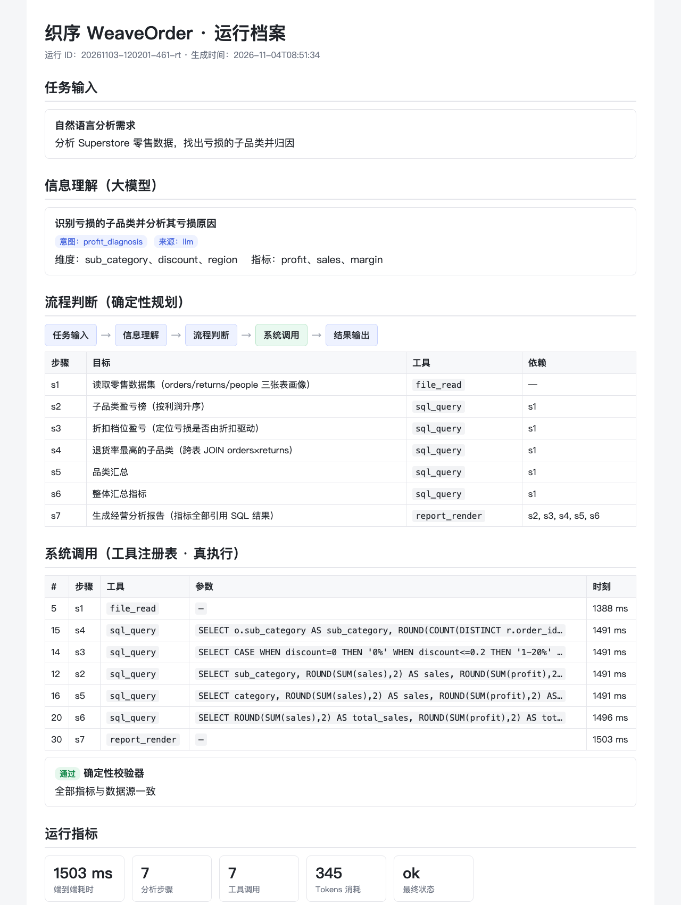
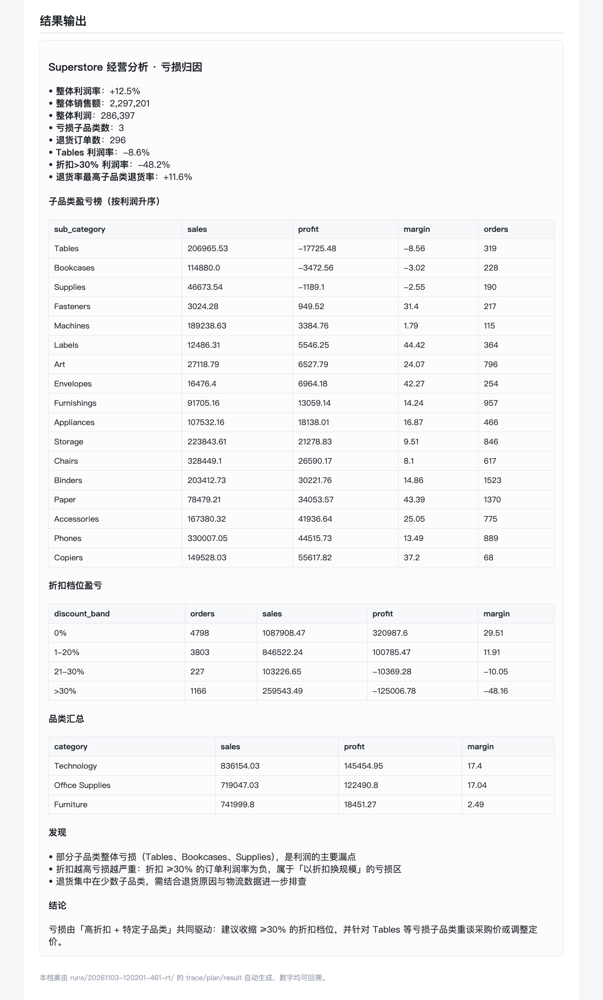

| 项目名称 | 织序 WeaveOrder —— 可审计的企业流程智能体 |
| 主题赛名称 | 云智专项赛 |
| 赛题名称 | 云上企业级流程智能体创新应用方案赛 |
| 团队名称 | 兰儒恺 |
| 填报日期 | 2026 年 11 月 |
| 项目名称 | 织序 WeaveOrder —— 可审计的企业流程智能体 |
| 应用行业及场景 | 智慧零售 · 连锁零售企业经营分析（销售/利润/折扣/退货归因） |
| 核心技术 | 自然语言处理（需求理解）· 智能体编排（确定性规划与多工具协同）· 数据工程（跨表 SQL 与确定性校验） |
| 应用发展阶段 | 应用示范阶段（已在真实公开数据集上完成端到端验证，含完整评测与对照实验） |
行业痛点：当前企业 AI 应用多停留在文案生成、知识问答等"单点试用"阶段，尚未深度嵌入生产、经营、管理等核心流程。以零售经营分析为例，一线与管理者普遍面临三类困难：
场景价值：本项目以连锁零售经营分析为切入点，把"自然语言提问 → 数据洞察 → 决策建议"的完整链路自动化，并将每一步工具调用、每一个数字都留痕、可复算。
核心场景：连锁零售企业经营分析。数据为公开的 Tableau Superstore 零售数据集，含 9,994 笔真实订单、21 个字段，以及退货清单（296 单）与区域负责人（4 人）两张辅助表。
主要功能：用户用一句自然语言提出分析需求（如"找出亏损的子品类并归因"），系统自动完成五段闭环：
设计理念：理解靠大模型，规划用确定性模板。大模型负责"听懂需求"，规划层负责"保证可复现"，两者职责分离，避免模型自由发挥导致的结果漂移。
系统架构（五层）：
系统对接与数据贯通：本方案对接三类系统/工具，满足"接得上、连得通"：
| 系统/工具 | 作用 | 调用与留痕方式 |
|---|---|---|
| 数据服务（SQLite 引擎） | 装载 orders / returns / people 三张表，执行只读 SELECT | 5 次 sql_query 调用，SQL 与结果全量留痕 |
| 报表服务 | 从 SQL 结果解析指标引用、生成 Markdown 报告与明细表 | 1 次 report_render 调用 |
| 大模型推理服务 | 自然语言需求理解（结构化信息抽取） | 1 次调用，消耗 345 tokens |
数据流转：三张数据表装载入库后，由 DAG 中的多条 SQL 分别完成"子品类盈亏、折扣档位、跨表退货率、品类汇总、整体指标"五类聚合；报告指标通过引用解析从 SQL 结果中取值，不手抄数字，校验器再用同一套查找逻辑独立重算比对。
企业 AI 落地的主战场正从"单点辅助"转向"流程智能"。据信通院等机构对传统企业数字化转型的调研，经营分析、报表生成、流程自动化是需求最集中的三类场景，其共同特征是高频、重复、规则相对清晰，最适合由智能体承接。
本方案面向连锁零售、电商、区域经销等拥有多表经营数据的企业，提供"用一句话完成一次经营分析"的能力。相较市面常见的 BI 工具，本方案无需用户编写 SQL 或拖拽报表，且每个数字都可回溯到数据源，适合快速推广。
本方案已在真实公开数据集上完成端到端验证，并形成完整的评测与对照实验：
| 指标 | 实测结果 |
|---|---|
| 数据集 | Tableau Superstore 公开零售数据：9,994 笔订单 / 296 笔退货 / 3 张表 |
| 端到端耗时 | 1.4 秒（含 1 次大模型调用） |
| 分析步骤 | 7 步全部成功（7 次工具调用，含 1 次大模型信息理解） |
| Token 消耗 | 345 tokens（prompt 240 + completion 105） |
| 评测通过率 | 7/7（含意图识别、黄金值核验、注入拦截、消融对照） |
| 黄金值来源 | 评测脚本从 CSV 独立重算，与被测实现零共享代码 |
对照任务：分析 Superstore 零售数据，找出亏损的子品类并归因（同一数据、同一问题）。
人工基线按标准分析作业流程（SOP）逐步记录：
| # | 步骤 | 操作内容 | 标准工时 |
|---|---|---|---|
| 1 | 数据理解 | 识别 3 张表、21 个字段、9,994 行订单 | 5 分钟 |
| 2 | 建库导入 | 创建分析库、导入 orders 与 returns | 5 分钟 |
| 3 | 子品类汇总 | 编写并调试按子品类的销售/利润汇总 SQL | 10 分钟 |
| 4 | 识别亏损 | 排序并核对亏损子品类 | 5 分钟 |
| 5 | 折扣分档 | 编写并调试折扣档位盈亏 SQL | 10 分钟 |
| 6 | 指标计算 | 手工计算利润率并交叉核对 | 10 分钟 |
| 7 | 跨表关联 | 建立退货表并编写 LEFT JOIN 计算退货率 | 10 分钟 |
| 8 | 报告撰写 | 整理数字、撰写发现与结论 | 15 分钟 |
| 合计 | 约 70 分钟 | ||
量化对比：
| 维度 | 人工基线 | 织序智能体 | 提升 |
|---|---|---|---|
| 端到端耗时 | 约 70 分钟 | 1.4 秒 | 约 3,000× |
| 操作步骤 | 8 步手工（含 4 段 SQL 编写调试） | 7 步自动 | — |
| 数字准确性 | 依赖人工交叉核对，易出错 | 校验器独立重算，错即拦截 | 质量保障机制化 |
| 可复现性 | 依赖个人经验与习惯 | 确定性规划，结果一致 | 可审计、可复现 |
| 单次成本 | 分析师时间成本（约 70 分钟） | 345 tokens | 边际成本趋近于零 |
质量对照（同一错误注入实验）：对报告关键指标注入同样的错误（把利润率算错一半）——校验器开启时，报告被拦截、不发布；校验器关闭时，错误数字直接发布（+6.2% vs 正确值 +12.5%）。人工流程若要达到同等保障，需额外增加交叉核对步骤（约 +10 分钟）。
下图为本次申报材料的运行档案页，完整呈现"任务输入 → 信息理解 → 流程判断 → 系统调用 → 结果输出"的闭环，以及每一步的工具调用与校验记录。


评测共 7 个用例，覆盖意图识别、主用例指标核验、注入拦截与消融对照，全部通过。黄金值由评测脚本直接从 CSV 独立重算，与被测实现零共享代码。
| Task | 验证内容 | 结果 |
|---|---|---|
| R01 | 主用例：亏损归因（Tables 利润率 -8.6%、折扣>30% 利润率 -48.2%、整体利润率 +12.5%） | PASS |
| R02 | 意图识别：趋势（trend） | PASS |
| R03 | 意图识别：区域（region），关联 people 表负责人 | PASS |
| R04 | 意图识别：品类概览（category_overview） | PASS |
| R05 | 注入错误 + 校验开 → 拦截，不发布 | PASS |
| R06 | 注入错误 + 校验关 → 错误数字直接发布（消融对照） | PASS |
| R07 | 跨表退货率：orders × returns JOIN（最高 Machines 11.6%） | PASS |
黄金值（评测脚本独立重算）：Tables 利润率 -8.56%；亏损子品类 3 个；折扣>30% 利润率 -48.16%；整体利润率 12.47%（销售额 2,297,201）；退货订单 296 单，退货率最高 Machines 11.61%。
（1）流程判断：按分析意图生成确定性分析 DAG（节选自 retail_agent.py）。
def build_plan(brief):
"""按分析意图生成确定性的分析 DAG（可复现、可审计）。"""
intent = brief.get("intent") or "general"
steps = [{"id": "s1", "tool": "file_read", "args": {}, "depends_on": []}]
if intent == "profit_diagnosis":
steps += [
{"id": "s2", "tool": "sql_query",
"args": {"sql": SUB_CATEGORY_PROFIT}, "depends_on": ["s1"]},
{"id": "s3", "tool": "sql_query",
"args": {"sql": DISCOUNT_BANDS}, "depends_on": ["s1"]},
{"id": "s4", "tool": "sql_query",
"args": {"sql": RETURN_TOP}, "depends_on": ["s1"]},
{"id": "s6", "tool": "sql_query",
"args": {"sql": OVERVIEW}, "depends_on": ["s1"]},
]
steps.append({"id": "s7", "tool": "report_render",
"args": {"metrics": METRICS, "tables": TABLES},
"depends_on": ["s2", "s3", "s4", "s6"]})
return {"goal": brief["focus"], "intent": intent,
"strategy": "dag", "created_by": "deterministic-planner",
"steps": steps}
（2）质量保障：校验器独立重算每个报告指标，不一致即拦截（节选自 retail_agent.py）。
def _verify_report(self, out):
"""独立重算：不走渲染路径，直接从 SQL 结果重新解析每个指标。"""
for metric in out.get("metrics") or []:
name = metric.get("name", "")
expected = metric.get("current")
if metric.get("baseline") is not None:
base = metric.get("baseline")
expected = ((expected - base) / base * 100
if metric.get("unit") == "%" else expected - base)
if abs(float(metric.get("value", 0)) - float(expected)) > 0.01:
return False, (f"「{name}」报告值 {metric.get('value')} 与数据源"
f"重算值 {round(float(expected), 4)} 不一致，已拦截")
return True, "全部指标与数据源一致"
（3）系统调用：工具注册表统一校验参数、风险分级与超时控制（节选自 core/tools.py / core/retail.py）。
registry = ToolRegistry()
registry.register(Tool(
name="sql_query",
description="对零售数据执行只读 SELECT 查询（支持 orders/returns/people 跨表 JOIN）",
parameters={"type": "object",
"properties": {"sql": {"type": "string"}},
"required": ["sql"]},
fn=lambda **kw: sql_query(state, **kw),
risk=0, category="retail",
returns="sql/columns/rows/row_count",
))
# 调用：参数先经 JSON Schema 校验/纠偏，再执行；全过程写入 trace.jsonl